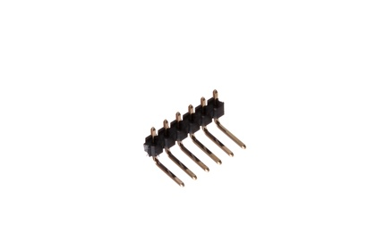

2.54 mm 6 Pin Header Right Angle - HR02

Summary
Name: 2.54 mm 6 Pin Header Right Angle
ID: HEAD-I01-X-06PI-RA
Hex ID: HR02
WebPage: https://github.com/oomlout/oomlout-OOMP/wiki/HEAD-I01-X-06PI-RA
Short URL: http://oom.lt/HR02
Revision History: https://github.com/oomlout/oomlout-OOMP/blob/master/parts/HEAD-I01-X-06PI-RA/
| Type |
Size |
Color |
Description |
Index |
HEAD
Header |
I01
2.54 mm |
X
|
06PI
6 Pin |
RA
Right Angle |
Images
About
This part is awaiting a description.
Specifications
| Info |
Value |
| Type |
Header |
| Size |
2.54 mm |
| Description |
6 Pin |
| Index |
Right Angle |
Extra Details
Spotted a mistake, want to add more? Let us know oomp@oomlout.com
All images and resources are licensed [CC BY-SA] unless otherwise stated (ie. the datasheets)